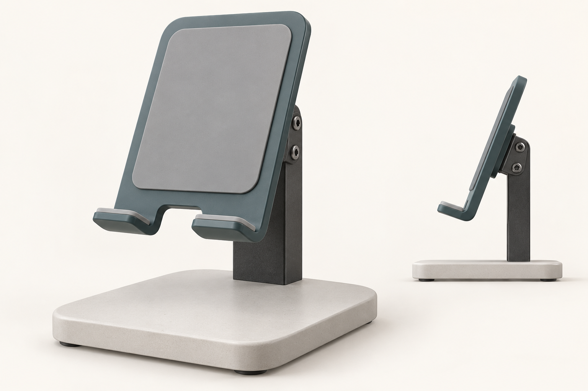

从一句话开始
“想要一个简洁、方便充电的桌面手机支架。”

AI 概念参考图 · 只生成一次。用于确定外形、比例与部件关系；不是已经完成的三维模型。
先用图片确定方向，再建立可旋转、可分件的三维模型。你可以看清它怎么组成，也可以提出一个局部修改，继续比较方案。

AI 概念参考图 · 只生成一次。用于确定外形、比例与部件关系；不是已经完成的三维模型。
正在载入本地三维模型…
先完成第一版，再验证局部修改。
完整展示 → 主要结构分离 → 重新组合 → 最终定格。
本例由 AI 依据概念图通过 Blender MCP 建模，不是自动扫描图片。它展示设计沟通能力，尚未验证承重、稳定性或制造公差。